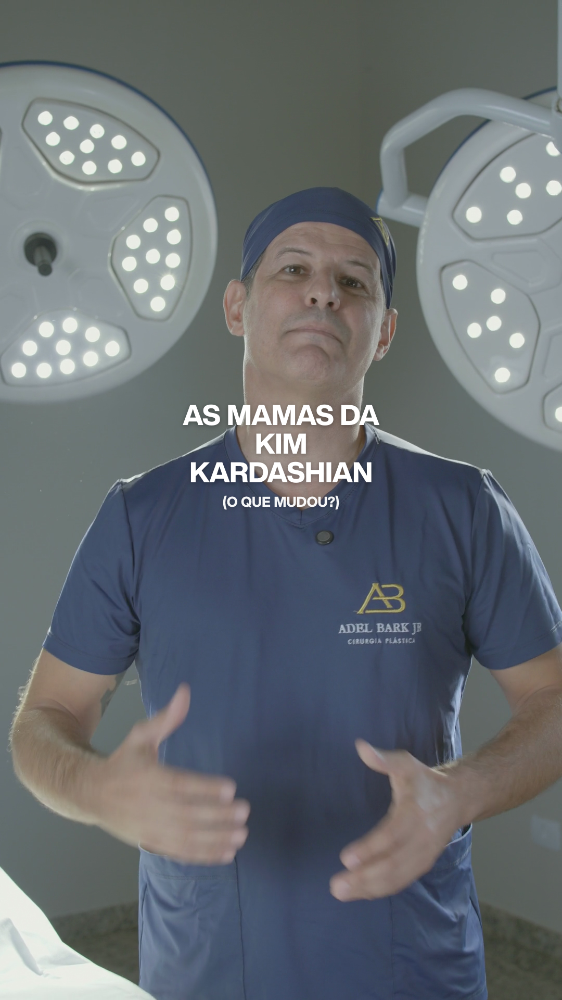
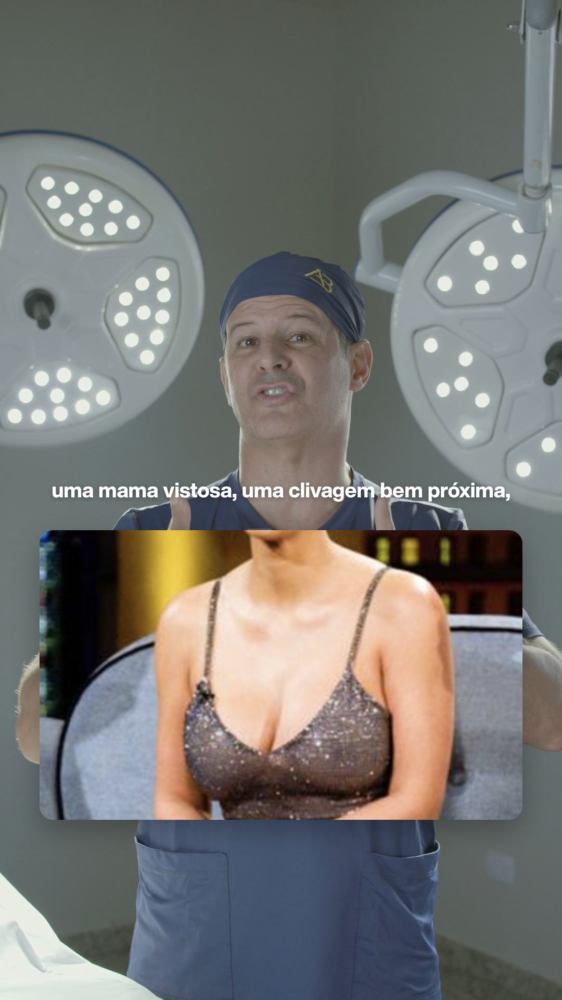
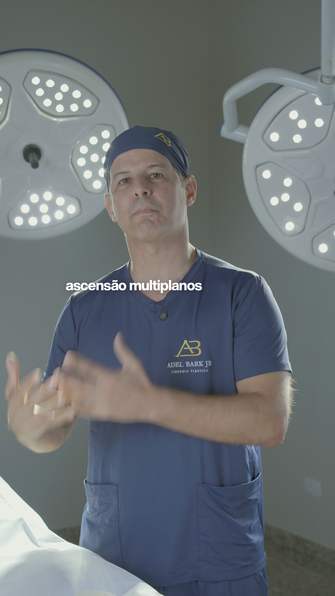

Storyboard — Cópia de C5824
padrão amanda v1.0 · marca Adel Bark Jr · 65.9 s · 7 momentos · aceleração 1.1× · cor: marca

1
0.0–2.7 s · 2.7 s
Gancho
título "AS MAMAS DA KIM KARDASHIAN" (26 car.) · subtítulo (14 car.)
“vamos falar das mamas da kim kardashian.”

2
2.8–10.2 s · 7.5 s
Card · card
kim-2017-antes.jpg
“ela tinha aqui nessa foto um colo cheio, / uma mama vistosa, uma clivagem bem próxima, / mas ao mesmo tempo uma mama muito grande, muito pesada,”
3
13.1–18.2 s · 5.1 s
Card · card
kim-2022-depois.jpg
“e ela mudou para isso daqui. / uma perda de colo, uma perda de volume, / mas uma mama muito mais funcional.”
4
18.3–22.5 s · 4.2 s
Card · card
kim-2017x2022.jpg
“será que ela retirou o implante? / será que ela está usando um implante menor? / isso a gente não vai saber.”

5
31.6–34.6 s · 3.0 s
Palavra-chave
ascensão multiplanos do / footprint mamário
“graças à ascensão multiplanos do footprint mamário. / técnica que a gente criou,”
6
50.0–51.0 s · 0.9 s
Palavra-chave
o / colo cheio
“e ao mesmo tempo, sim, a paciente tenha o colo cheio,”
7
51.0–52.2 s · 1.2 s
Palavra-chave
com o / implante pequeno
“com o implante pequeno, com o implante mais funcional.”